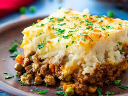

Recipe of the day
Shepherd's Pie
Easy shepherd's pie — the name says it all with this recipe. This dish is comforting and hearty with cream cheese added in for irresistible flavor, all in just a few simple steps.